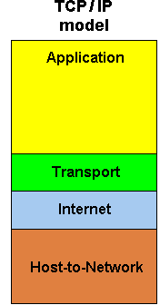

| Its acronym "Open Systems Interconnection" |
Its acronym "Transmission Control Protocol/Internet Protocol" |
| It is a conceptual model that characterizes and standardizes the communication functions of a telecommunication or computing system without regard to their underlying internal structure and technology. |
It is a suite of communication protocols used to interconnect network devices on the internet. TCP/IP can also be used as a communications protocol in a private network |
| It has seven(7) layers Model |
It has four(4) layers Model |
 |
 |
| Transport layer guarantees delivery of packets |
Transport layer does not guarantee delivery of packets |
| It uses horizontal approach |
it uses vertical approach |
| It has separate session layer |
There is no session layer here as their functions are provided by the transport layer |
| It has separate presentation layer |
No separate presentation layer as their as their functions are provided by the application |
| Network layer provides both connectionless |
Network layer provides only connection less services |
| It does not support internet woeking. |
It supports internet working. |
| It has strict layering. |
It is loosely layered |